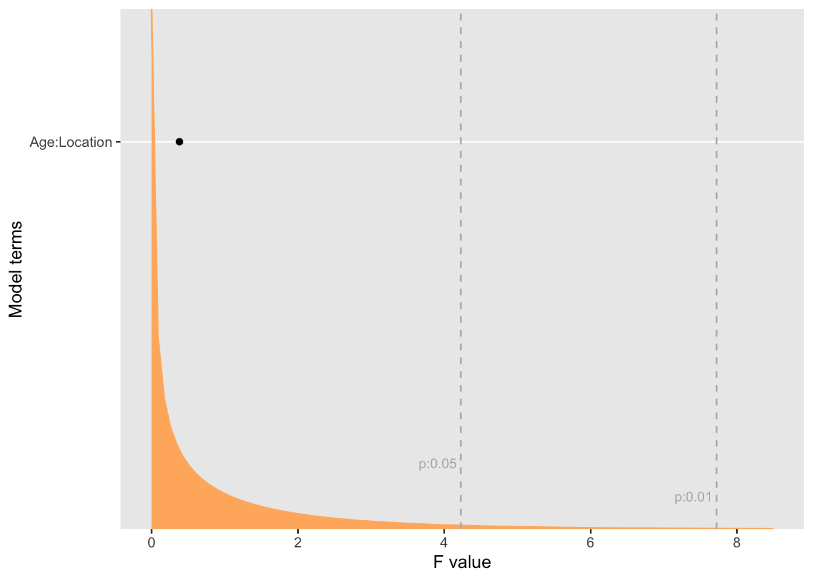
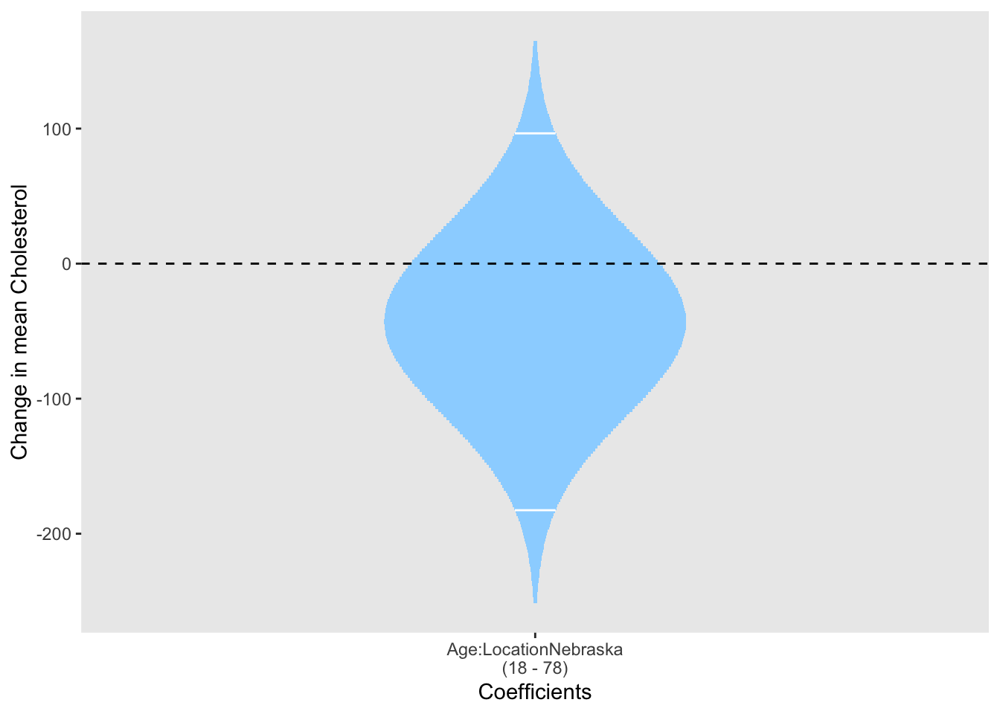
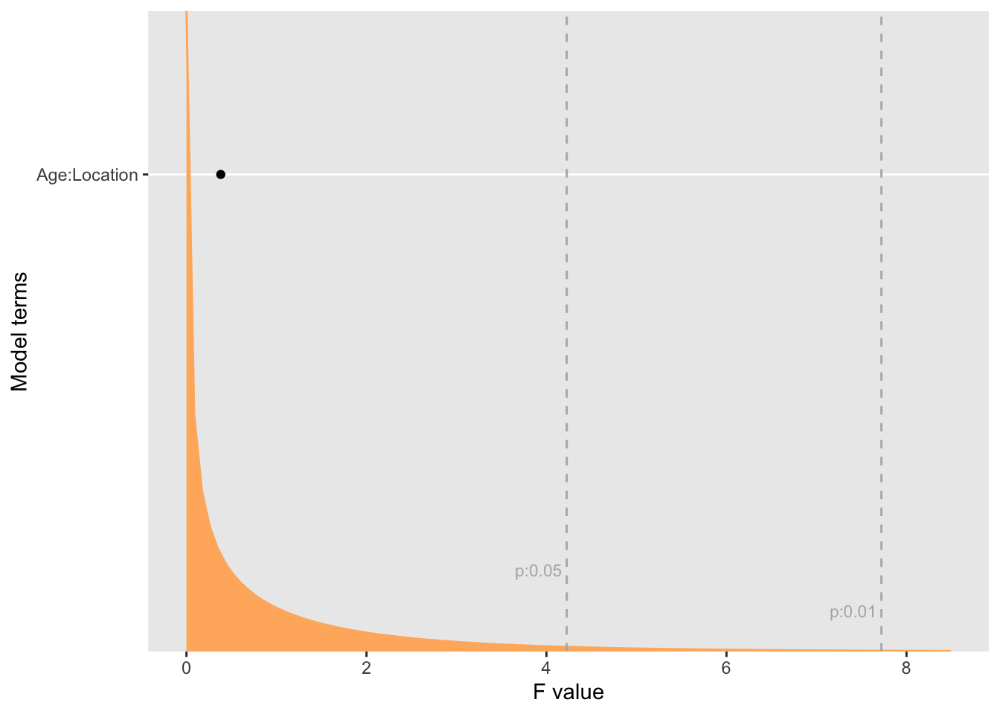
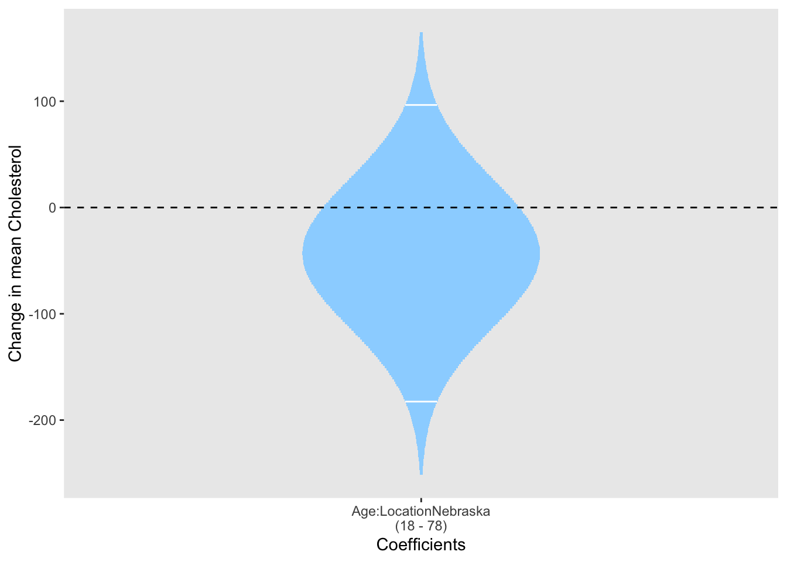

1.7 Including factors in linear models
This is a simple example of comparing regression lines for two groups. See the chapter on ‘Issues in Experimental Design’ for further use of factors.
> Discuss how to code a factor in a linear model.
> Put the cholesterol data in rpanel as a dataset.
> Use the lattice as this is the first discussion of interaction. Model formula with too.*

rp.lm(Cholesterol ~ Age + Location, data = cholesterol, panel = FALSE)
rp.lm(Cholesterol ~ Age * Location, data = cholesterol, panel = FALSE)

## Estimate Std. Error t value Pr(>|t|)
## (Intercept) 35.8112138 55.116605 0.6497355 0.521562661
## Age 3.2381449 1.008827 3.2098104 0.003516155
## LocationNebraska 65.4865523 61.983368 1.0565181 0.300450053
## Age:LocationNebraska -0.7177069 1.162845 -0.6171990 0.542471382 

> Another example - with several covariates?
> Trigonometric regression?